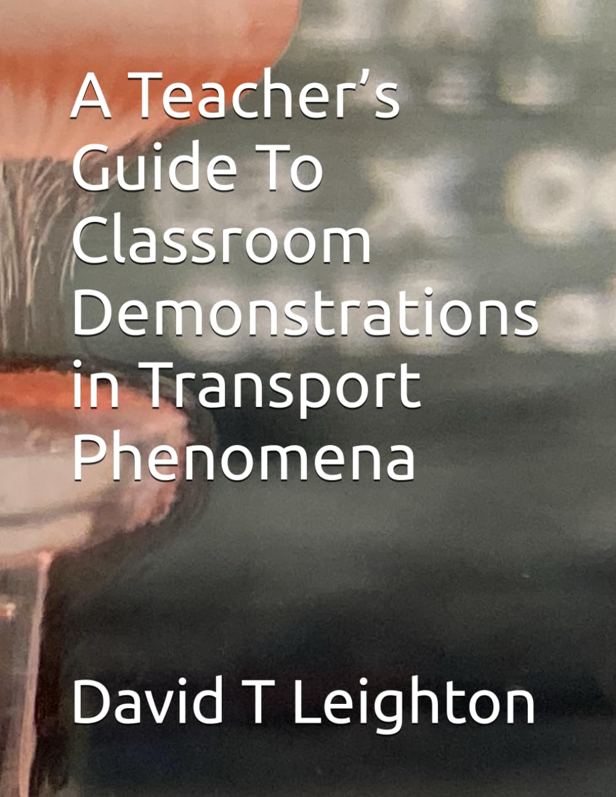
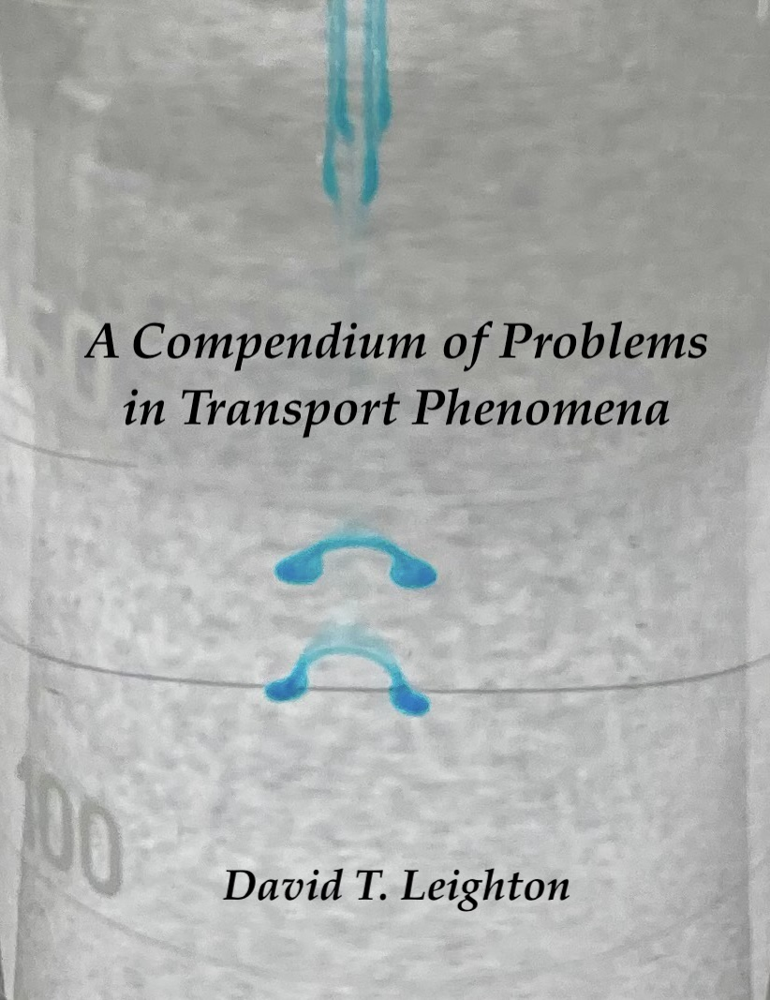
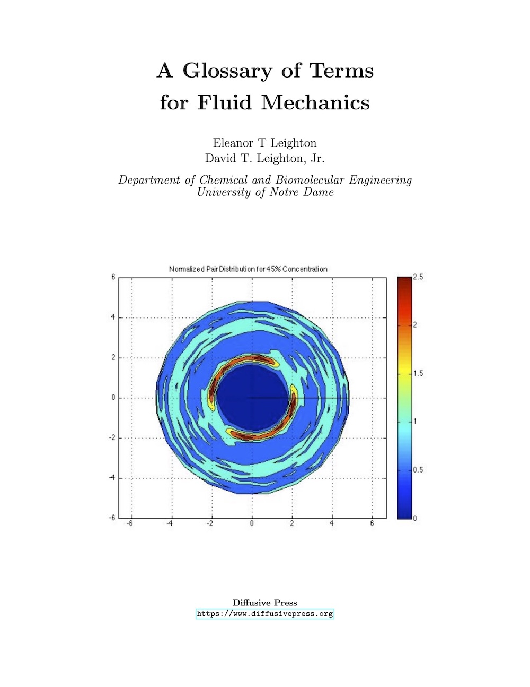

The Mathematical Language of Transport: A Primer on Mathematical Methods for Transport Phenomena
David T. Leighton, Jr.
Transport phenomena has a reputation for being one of engineering's most mathematically demanding subjects — and it's often deserved. This primer bridges the gap between the math you already know and the math transport actually requires, covering differential equations, scaling analysis, index notation, and the numerical methods needed when no clean solution exists. Every technique is grounded in a real problem: why face shields failed against airborne droplets, how thick a Space Shuttle tile needs to be, why a settling rod doesn't rotate in a viscous fluid. The goal isn't abstraction — it's fluency, and the confidence to move from a physical problem to its mathematical solution and back again.
Written for students preparing for a first transport course or brushing up before graduate study.
The PDF is licensed under CC BY-NC-SA 4.0 and available free of charge. Print and Kindle editions are also available from Amazon.

A Teacher's Guide to Classroom Demonstrations in Transport Phenomena
David T. Leighton, Jr.
For many chemical engineering students transport phenomena can be a particularly difficult course series. Over many years, the author has developed a number of demonstrations, along with his students, to better clarify transport topics. This guide contains over 30 demonstrations that can be conducted in a classroom to demonstrate transport phenomena. The demonstrations are most applicable to undergraduate transport teaching, but some could be used in high school courses with others reaching into graduate level offerings.
Available in ebook, paperback, and hardcover from Amazon. PDF available on request from diffusivepress.org.

A Compendium of Problems in Transport Phenomena
David T. Leighton, Jr.
Many faculty find it challenging to come up with problems for exams and homework assignments - a common complaint. In this book are gathered hundreds of problems which have been developed over 40 years of teaching Transport at Notre Dame. The PDF is available free of charge for educational, non-commercial applications, and the transportproblems.zip file containing all LaTeX scripts, templates, and AI prompts for generating both this Compendium as well as new problems is available to faculty on request from diffusivepress.org.

A Glossary of Terms for Fluid Mechanics
Eleanor T. Leighton
David T. Leighton, Jr.
Fluid Mechanics has a specialized language all its own. In order to "walk the walk" of solving transport problems, it is useful to first "talk the talk". This glossary was prepared to make the language of fluid mechanics a bit more accessible. Originally developed from flash cards prepared by a student for learning the terminology, this glossary has been expanded to include many of the key terms, phenomena, and concepts covered in Transport I. The Glossary now contains links to relevant Wikipedia articles for further information as well. The PDF is available free of charge for educational, non-commercial applications from diffusivepress.org.